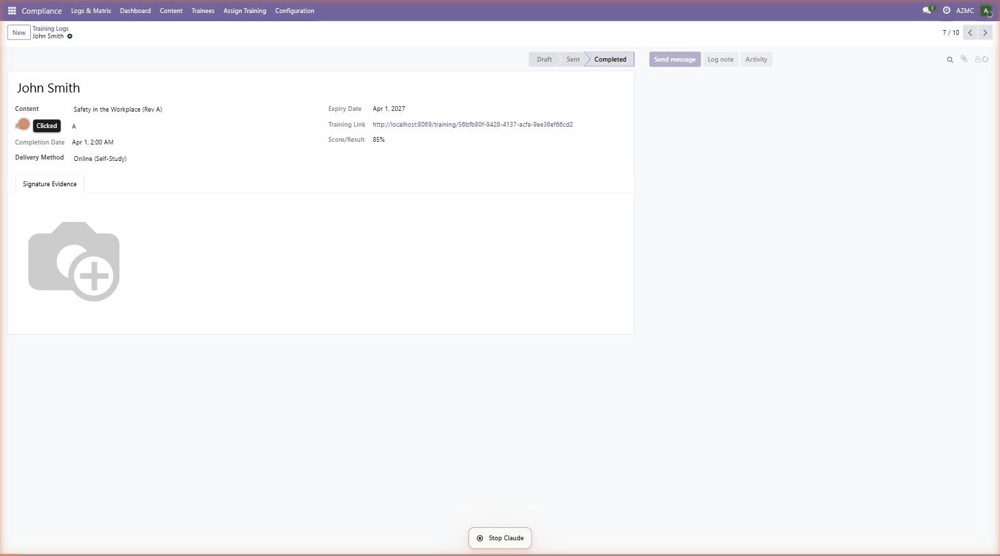

Assign, track, and verify employee training compliance — online or on-the-job — with full audit history, digital signatures, competency quizzes, and automated email notifications. Built for ISO 9001, AS9100, IATF 16949, and any regulated manufacturing or service environment.

Designed by a quality professional with 30+ years in aerospace and manufacturing. Addresses real-world training documentation requirements of ISO 9001, AS9100, IATF 16949 — without the cost of standalone LMS software.